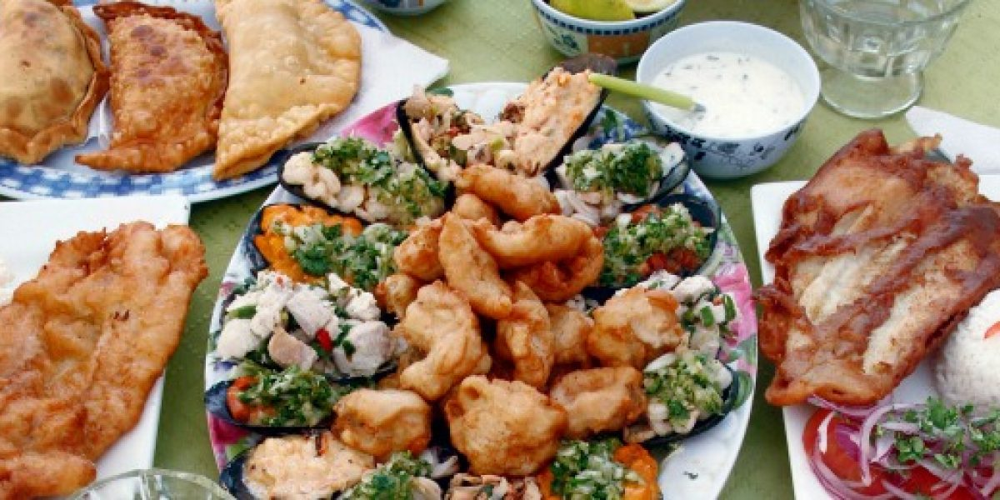

REPOSTERÍA
Crema de Chantilly
|
CALETA DE LENGA CONQUISTA A LOS TURISTAS CON SU SABROSA GASTRONOMÍA Febrero 17, 2020  Son muchos lugares donde los turistas pueden probar las exquisiteces culinarias que ofrece nuestro país debido a lo largo de su territorio, sin embargo siempre hay lugares que destacan. Las visitas a las caletas de Chile son para quienes buscan pasear por el día y también degustar de los destacados platillos que se ofrecen. La Caleta de Lenga, en la Región de Biobío, es sin duda una de las más visitadas con una veintena de restaurantes y emprendimientos especializados en cocina de mar. Ofrecen exquisitos platos de pescados y mariscos, pailas marinas, machas a la parmesana o al pil pil, empanadas, carapachos o reinetas, congrios y merluzas fritas, entre otras preparaciones. Tal como la Caleta de Lenga, también se destacan lugares como Colcura, Lota y Coronel. Comunas que igualmente impulsan el turismo en nuestro país. Comparte esta noticia 


|